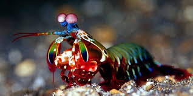
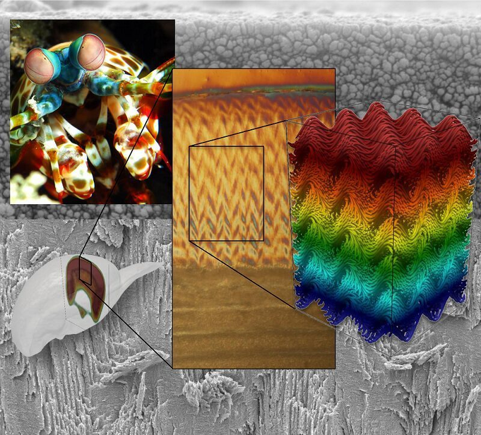

Fatos sobre o Stomatopoda
Informaçõe Gerais
 Nome Científico: Odontodactylus scyllarus| Classificação científica | |
|---|---|
| Reino: | Animalia |
| Filo: | Arthropoda |
| Subfilo: | Crustacea |
| Classe: | Malacostraca |
| Subclasse: | Hoplocarida |
| Ordem: | Stomatopoda Latreille, 1817 |
Olhos Incomuns

Ele possui um tipo de olho comosto, feito de milhares de pequenas unidades, cada uma detectando a luz de forma independente. Aqueles na faixa intermediária - a faixa central que você pode ver na foto - são especiais. São eles que permitem ao animal ver as cores.
A maioria das pessoas tem três tipos de células de detecção de luz, ou fotorreceptores, que são sensíveis à luz vermelha, verde e azul. Mas o camarão mantis tem de 12 a 16 fotorreceptores diferentes em sua banda média. A maioria das pessoas presume que elas devem ser realmente boas em ver uma ampla gama de cores - uma “ bomba termonuclear de luz e beleza ”, como disse o Oatmeal. Mas no ano passado, Hanna Thoen da Universidade de Queensland descobriu que eles são muito piores em discriminar cores do que a maioria dos outros animais! Eles parecem usar seus mais de uma dúzia de receptores para reconhecer cores de uma maneira única que é muito diferente de outros animais, mas estranhamente semelhante a alguns satélites.
Outras curiosidade sobre os olhos desse camarão é que eles poderem ver em ultavioleta, e Como nós, os camarões mantis vêem as cores com a ajuda de proteínas sensíveis à luz chamadas opsinas.
O maior boxiador dos mares
Em um comunicado, pesquisadores envolvidos em um novo estudo acerca deste animal, revelaram resultados impressionantes. Segundo o novo estudo, a velocidade de cada soco do animal, estaria estimada em, aproximadamente, 23 metros por segundo, que poderia gerar a cada golpe, 1.500 newtons de força. Com toda essa força, esses pequenos animais conseguem quebrar as carapaças de caranguejos e outros moluscos.
Para os autores do projeto, uma comparação para a dimensão de tal descoberta, seria imaginar um indivíduo socando repetidas vezes, uma parede de concreto, sem quebrar sua mão durante o processo. No entanto, parece ser humanamente impossível.
O estudo também revelou a presença de nanopartículas que serviriam como uma barreira de impacto, à medida que o animal usa suas patas para dar um soco poderoso. No momento em que ocorre o impacto da pata com algo sólido, as nanopartículas atuaram como um dissipador de energia, fazendo com que a colisão não ofereça problemas ao animal.